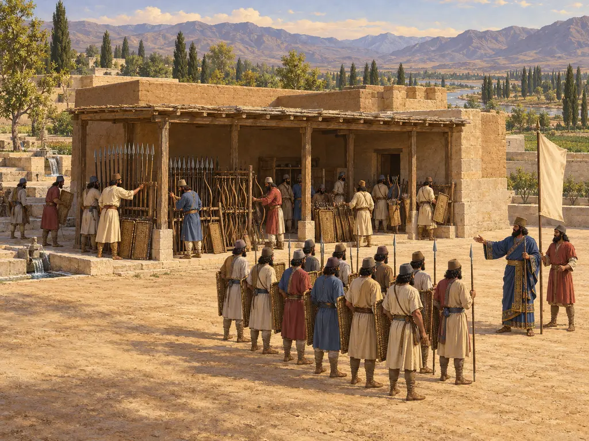
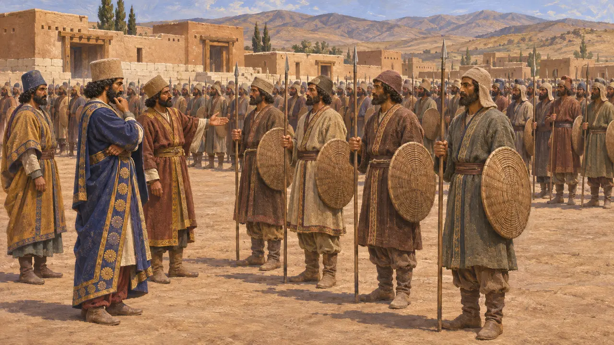
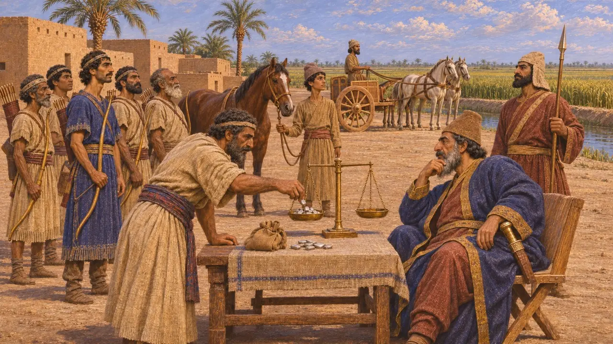
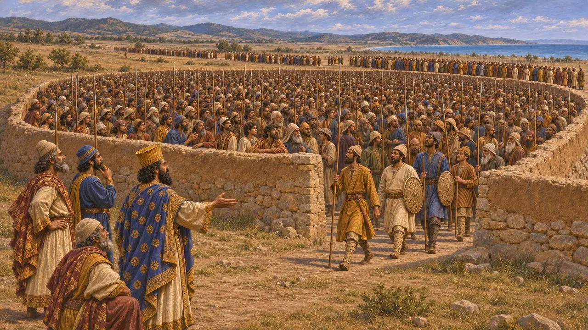
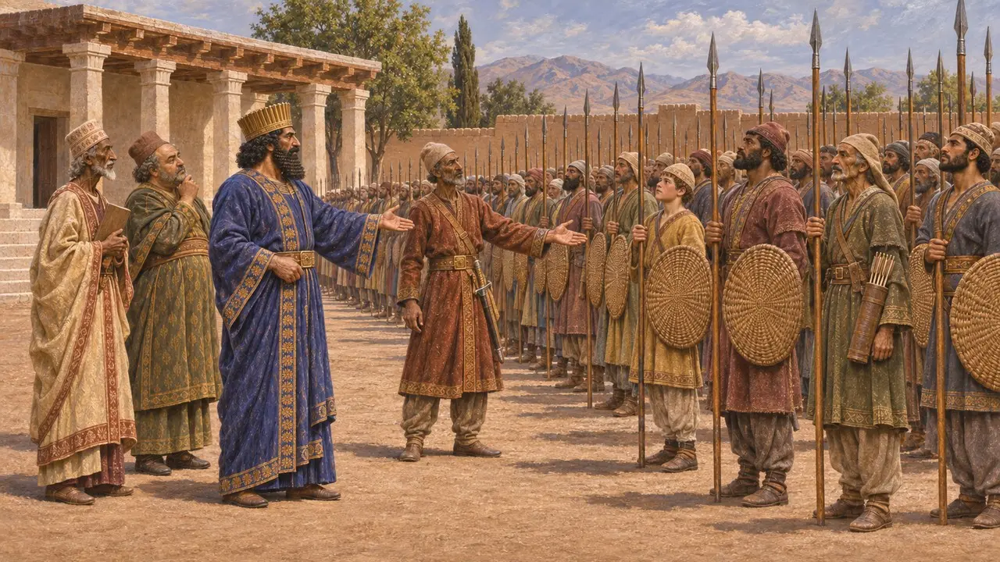
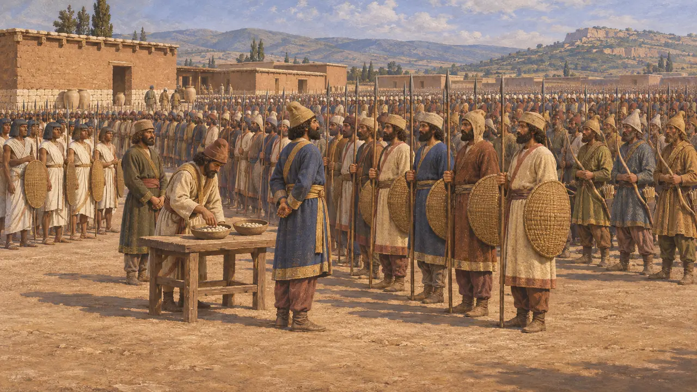

集结场
波斯征召兵集合清点与检阅之所，约公元前530-479年
波斯国王征兵时，召集人员到指定地点会合，在那里清点人数、检阅装备并编入各将领麾下。集结将国王的权力与负有服役义务的家户联系在一起。一个由众多民族组成的帝国，正是借此将农夫、领地持有者和属民分遣队化为一支作战力量。
游戏中： 集结场可召集城中至多四分之一的男子，手持长矛、盾牌和弓列队。没有任何古代文献记载过这样固定的比例。真实的征召兵来自服役封地和王室征调，规模多有不同。

全民皆兵
见于史载在贝希斯敦铭文中，大流士用古波斯语词kāra称呼他派去讨伐叛军的人马。这个词既可指人民，也可指军队。由此可见，对波斯人而言，武装大军就是在国王将领麾下应召出征的波斯与米底民众。铭文还列出了大流士于公元前522至前521年间派去统率这些部队的将领之名。
DB

以服役换取的土地
见于史载巴比伦文献显示，王室土地以弓地、马地和战车地的名义分块授予。持有者须为国王提供一名士兵，其装备与土地类型相应。久而久之，许多人改以缴纳白银代替亲身服役。最详尽的证据来自尼普尔的穆拉树档案，其年代在公元前5世纪稍晚时期。
M. Stolper, Entrepreneurs and Empire, 1985

薛西斯集结并清点大军
古代记述希罗多德记载，薛西斯远征希腊的大军在卡帕多奇亚的克里塔拉集结，后来在色雷斯的多里斯科斯平原清点人数。据他说，人们先将10000人密集地站进一块地方，围着这块地方筑起一道墙，然后一批接一批地填满这片围场，直到全军都依次通过。他给出的步兵总数达1,700,000人，远超现代史学家所能接受的数字。
Herodotus 7.26; 7.59-60

国王的年度检阅
古代记述公元前4世纪的色诺芬写道，波斯国王每年都会检阅他所供养的驻军。靠近其居所的驻军由他亲自检阅，较远的驻军则派亲信前去检阅。兵员齐整、装备精良的军官会得到奖赏，疏于管理者则受惩罚。色诺芬钦慕波斯人，可能将这一做法理想化了。
Xenophon, Oeconomicus 4

多少人响应了召集
争夺中王家征召兵的规模究竟有多大、征召的又是哪些人，史学家至今仍有争论。有人强调以波斯人和米底人为核心的部队，以及服役封地的持有者；也有人更看重希罗多德开列的那份冗长的臣属民族分队名单。现代学者对薛西斯公元前480年陆军规模的估计，大多在约70,000至300,000人之间，远低于希罗多德给出的数字。
P. Briant, From Cyrus to Alexander, 2002
来源
- Herodotus, Histories 7
- Behistun inscription (DB)
- M. Stolper, Entrepreneurs and Empire, 1985
- Xenophon, Oeconomicus 4
- P. Briant, From Cyrus to Alexander, 2002